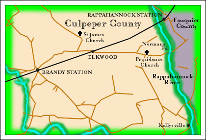

John Stannard, Marshall of the Fredericksburg Chancery District
to Thomas M. Smoot ~ 1820
Culpeper County Virginia Deed Book LL, page 491
Transcription contributed
by Dennis M. Smoot
End Notes by Frederick Smoot

Location of Norman’s Ford from a Civil War Map
|
This Indenture made this 23 rd day of August in the year of
Christ 1820 between John Stannard, Marshall of the Fredericksburg Chancery District of the Town of Fredericksburg and State of Virginia
of the one part and Thomas M. Smoot of the County of Culpeper and State of Virginia of the other part. Whereas by a decree entered
in the Superior Court of Chancery held in the Capitol in the City of Richmond on the 11th of March 1820 in certain causes therein
depending between Benjamin Mershon, Administrator and Plaintiff and Carter Beverly, Defendant; between Byrd Beverly, Plaintiff
and Elizabeth Adams Marshall and other defendants; between the Mutual Assurance Society Against Fire On Buildings of the State
of Virginia, Plaintiffs and Carter Beverly and Munford Beverly, Defendants; between Sarah R. Grymes and Elizabeth L. Grymes,
Plaintiffs and Carter Beverly and others, Defendants; between Byrd Beverly, Plaintiff and John Jett and others, Defendants, it was
decreed and ordered that unless the defendants in the second suit should within ten days from the date of the decree pay to the said
Byrd Beverly or his counsel in the above mentioned causes $67911.58 with interest at five percent per annum on $44444.44 from the
first day of January 1819 till paid and his costs in the said suit and unless the said Carter Beverly should within ten days from the date
of the decree pay into the Farmer’ Bank of Virginia to the credit of the first of the said suits $5217.04 with interest at 6 percent per
annum from the said first day of January 1819 on 5106.25 part thereof then that the Marshall of the Fredericksburg Chancery District
should after having advertised the time and place of the sale for nine weeks successively in such newspapers as he might think proper
sell at public auction upon a credit by consent from the day of the sale of twelve months as to one half of the purchase price and of two
years as to the balance the first tract of land in the deed of mortgage from Carter Beverly to Byrd Beverly among the exhibits in the second
of the said suits mentioned and if the net proceeds of the sale should not be sufficient to pay the said several sums of $67911.58 and of $5217.04
with the interest and costs aforesaid then all that tract of land sold by Carter Beverly to Munford Beverly as by Indenture among the exhibits,
it being a part of the second tract of land comprised in the said deed of mortgage from Carter Beverly to Byrd Beverly, and if the net proceeds
of both of these sales should be insufficient to pay the said several sums with interest and costs as aforesaid then all the residue of the lands
comprised in the said deed of mortgage from Carter Beverly to Byrd Beverly and whereas in pursuance of the said decree the said John
Stannard, Marshall as aforesaid did on the twenty third of August in the present year on the premises at Elkwood in the County of Culpeper
expose to sale the lands by the said decree directed to be sold. Notice of the time and place of such sale having been for nine weeks successively
advertised in the Virginia Herald, in the Richmond Enquirer and National Intelligencer and whereas at such sale the said Thomas M. Smoot
became the purchaser of a tract or parcel of the said land at the price of $4694.21. Now therefore this Indenture, witnesseth that the said
Stannard, Marshall as aforesaid as well for and in consideration of the sum of one dollar to him in hand paid by the said Thomas M. Smoot the receipt
whereof is hereby acknowledged hath granted, bargained and sold, and doth by these presents grant, bargain and sell unto the said Thomas M. Smoot
his heirs and assigns all the said tract or parcel of land so aforesaid purchased by the said Thomas M. Smoot containing by survey five hundred and
twenty one acres, the boundaries of which said tract are as follows, viz, Beginning at a Spanish oak on the River corner to Carter Norman ford
tract, thence S 66º W 32 poles to two red oak saplings called for by Carter not now to be found, thence S 11º E 46 poles to two small elms
and a white oak called for not found, thence S 19º 30' W 110 poles to Norman’s ford road, thence along the said road to a stake on the
north side thereof, thence N 29º W 330 poles to a stump in Smoot’s field corner to Courts, thence N 34º E
160 poles to a hickory
on the river corner to Courts, thence with the meander of the river to the beginning. To have and to hold the said tract of land together
with the appurtenances thereto belonging or appertaining to the said Thomas M. Smoot his heirs and assigns forever and the said John Stannard,
Marshal as aforesaid, the said tract of land and the appurtenances against himself and his heirs and all other persons claiming or to claim by,
through or under him unto the said Thomas M. Smoot his heirs and assigns shall and will by these presents forever warrant and defend. In witness
whereof the said Stannard hath hereunto set his hand and seal the day and year first herein written.
John Stannard, MFCD
Signed, sealed, and delivered
In presence of
French Dulaney
George Ross
John Thorn
Robert Patterson
End Notes:
Related Deeds
There are three other deeds involving the land described in the above 28 Aug 1820 Indenture.
1. Thomas M. Smoot to John Stannard, Culpeper County, VA Deed Book MM, pp. 263/4/5, dated 18 Aug 1821.
2. Thomas M. Smoot to James
L. Emmons, Culpeper County, VA Deed Book NN, page 51, dated 18 Aug 1821.
3. Thomas M. Smoot to Enoch Jameson, Culpeper County, VA Deed Book TT, p. 129, dated 03 Dec 1823.
Norman’s Ford
This crossing of the Rappahannock River was located on a map from the Atlas
to Accompany the Official Records of the Union and Confederate Armies, Government Printing Office,
Washington, 1891-1895.
Elkwood & Beverley Family Information
According to John McGill, Robert Beverely (“d. 4-12-1800”)
owned “ . . . In addition to ‘Blandfield’, . . . the ‘Elkwood
tract’ of 13,000 acres in Culpeper Co., which he left to his son Munford, who sold
it in 1805 to Daniel Grinnon, who built ‘Presque Isle’, which is still standing
and owned by the Willis family. ”
Whatever the arrangement between Munford Beverley and Daniel Grinnon,
it is obvious the Beverley family were still involved in at least part of the Elkwood tract
up to 1820. Additionally, John McGill identifies Byrd Beverley, Carter Beverley, and Munford
Beverley, as three of Robert Beverley’s sixteen children .
Source for Beverley Family Information:
McGill, John, The Beverley Family of Virginia, Descendants of Major Robert Beverley (1641-1687)
and Allied Families, The R. L. Bryan Company, Columbia, S. C., 1956.
|
|